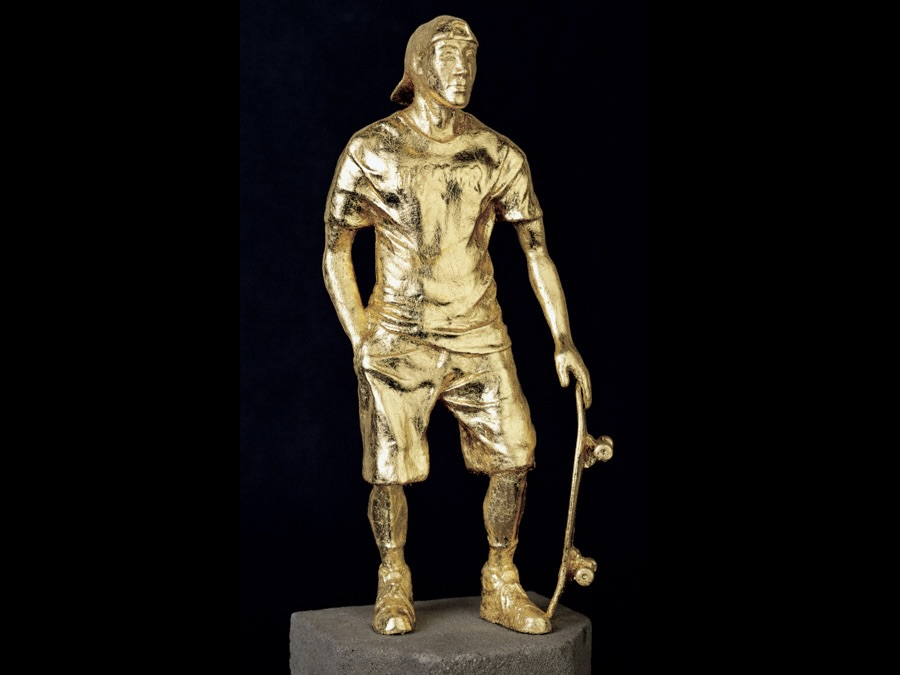

The title of "Skater of the Year" is awarded annually by Thrasher. The tradition was started in 1990, and the accolade remains one of the most respected awards in global skateboarding culture. The title is bestowed to one skater annually and announced by Thrasher's editor.
In the early days of the contest it was very common to for the winner to have just put out one video part. Over the years however, expectations have grown for the skateboarders looking to win the award. It is not uncommon in the current age of skateboarding for the winner to have released two or more video parts.
Since 1990, the award has been handed to vert skaters, street skaters, and skaters that take up both disciplines. The style of street skating has dominated the contest for the most part.